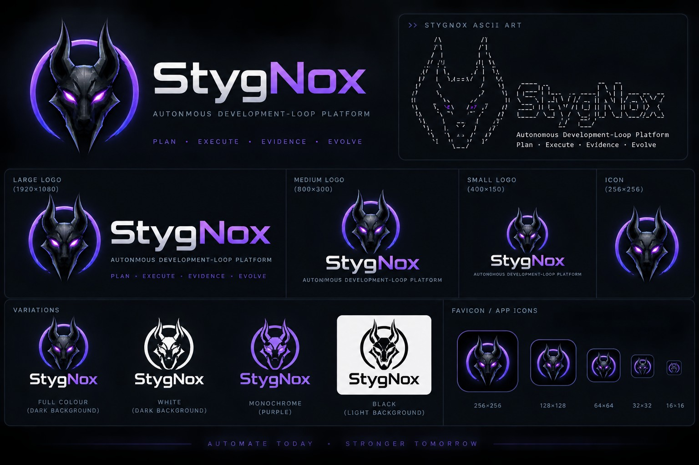

Selected
Featured panel
Use restrained glow for selected, active or deliberately featured content.
A dark-first product system derived from the selected StygNox branding: metallic neutrals, controlled violet energy, terminal credibility and operator-first clarity.
Purple is a signal, not a page fill. Keep the product grounded in near-black and navy surfaces so the brand colour retains meaning.
Use Space Grotesk or a strong geometric sans for display work, Inter for product UI and JetBrains Mono/Cascadia Code for machine state, commands, logs, hashes and evidence.
$ stygnox run --plan EX-READY-0042
status=RUNNING authority=GUARDED evidence=CAPTURING
gate=none recovery=ARMED step=04/09Use restrained glow for selected, active or deliberately featured content.
Most cards should rely on border, hierarchy and spacing rather than visual effects.
Never use colour alone to communicate authority, risk or destructive intent.
